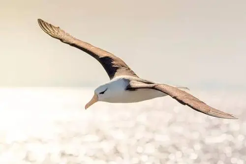
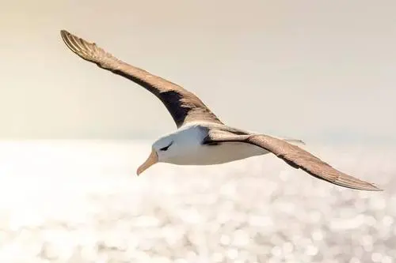

 
短尾信天翁
短尾信天翁（学名：Phoebastria albatrus）为鹱形目信天翁科下的一种大型海鸟， [1]
别名海燕，单型种，无亚种分化。体长94-95厘米，身体白色，头和颈缀有黄色，初级飞羽和尾尖端黑褐色，嘴粉红色，脚暗色。在行为上相比短尾信天翁不接近船只，而黑脚信天翁喜欢接近和跟随船只。 [2]
短尾信天翁常年生活在海上，繁殖期间居住于海岛或岩壁上，为居留性鸟类，不迁徙。主要以海水表层的小型软体动物、鱼类和其他海洋无脊椎动物为食，一般在水面觅食。分布于北太平洋和亚洲的西太平洋一带，中国钓鱼台
群岛有分布。繁殖期10-12月，常成对集中在一起营群巢，每次产1枚卵，孵化期和育雏期长，幼鸟有喷吐胃液防御天敌的特殊本领，寿命长，可达40-60年。
由于人类利用、渔业误捕和火山喷发等因素，其种群数量稀少，2009年估计不超过3000只，为中国国家一级保护动物，并列入世界自然保护联盟濒危物种红色名录。
（形态特征）（字体稍微大一点）
短尾信天翁平时多为单只或成对活动，在冬季或在食物特别丰富的地方才偶尔能见到比较小的群体。善滑翔飞行，除繁殖期外常在海洋上空飞翔，栖息于海面，随波逐流，会游泳，但不潜水。性情比较警觉，孤独而安静，一般不像其他种类的信天翁那样接近航行于海洋中的船只。在海面上需要靠两翅的急剧拍打才能起飞，在陆地上则根本无法起飞，常常要爬到悬崖边或者高坡上向下跳，才能飞起来。
[2] [6]
短尾信天翁特别喜好在天空中自由翱翔，它驾御长风、借助风力翱翔的技巧高超。它的翅膀长而窄，能适应海洋的多变气流，展开双翼，可以在空中停留许久而不用扇动翅膀，任凭强风吹送。它翱翔的动力来源，主要是上升气流所产生的动能，尤其是海洋上空的不稳定上升气流。短尾信天翁一般利用顺风和下落飞行来加快速度，接近海面的时候再转方向，并且乘与波峰摩擦而减弱的迎风而上升，飞上天空，如此反复飞翔。有时，它在滔天大浪之上，忽而冲上云天，忽而又俯冲下来，甚至能在暴风雨中前进无阻，可以说它是以风为生的。
[6]
食性
短尾信天翁无论白天还是夜晚都进行觅食活动，特别是在繁殖期间。主要以栖息于水表层的小型软体动物和其他海洋无脊椎动物及小鱼为食，有时也吃船上扔下来的动物内脏等，特别是捕鲸船和渔船上扔下的废弃物。它既不能在空中飞翔捕获食物，也不能潜入水下捕食，觅食活动主要在水面进行。在繁殖期外的游荡期间，也可以全天觅食。雏鸟的食物主要为成鸟已吞下后又反刍的已初步消化的食物。
[2] [6]
迁徙
短尾信天翁为留居性鸟类，终年留居亚洲西太平洋及其岛屿，非繁殖期偶尔也游荡到东太平洋加利福尼亚，往北到阿拉斯加、白令海和堪察加半岛附近海域。 [2]
叫声
短尾信天翁除了繁殖期外很少鸣叫， [2] 于海上通常无声。
（保护措施）
已有：在日本、加拿大和美国，短尾信天翁受到法律保护。2005年，短尾信天翁的保护和恢复计划草案已经拟定。阿拉斯加和夏威夷的延绳钓渔业已经制定了缓解措施。捕鱼用的渔网经过改造以防止海鸟被鱼钩钩住，同时那种改造过的渔网被免费提供给阿拉斯加的捕鱼船队。2006年，太平洋中西部渔业委员会通过了一项旨在保护包括短尾信天翁在内的海鸟的法案。日本的鸟岛已经建立了国家级自然保护区，在1981-1982年，移植了一些原生植物到鸟岛的筑巢地以改善其栖息环境和加固鸟巢，那些措施加大了繁殖成功率，使得超过60%的卵能够孵化出幼鸟。1993年开始用诱饵将它们吸引到鸟岛上的其他地方筑巢繁殖，在1995年11月，第一对短尾信天翁开始在那些地点繁殖，那些新地点幼鸟的数量从2004年的1只上升到2005年的4只，2006年的13只，2007年的16只，2007年10月-11月，有35个鸟卵产在那些新的地点。2007年，日本政府批准了一个将短尾信天翁引种至鸟岛300公里外的向岛的项目，第一批于2008年3月引种到向岛的10只幼鸟都成功长大。
[7]
建议：继续推进渔业中为了防止海鸟被误捕的保护措施，引种短尾信天翁到其他历史分布地区以减少自然灾害对其主要繁殖地的威胁。继续加强实施钓鱼台群岛的种群保护措施。继续通过卫星遥测技术研究短尾信天翁的海上分布和海洋生境。加强陆地上的短尾信天翁的种群管理和监控。